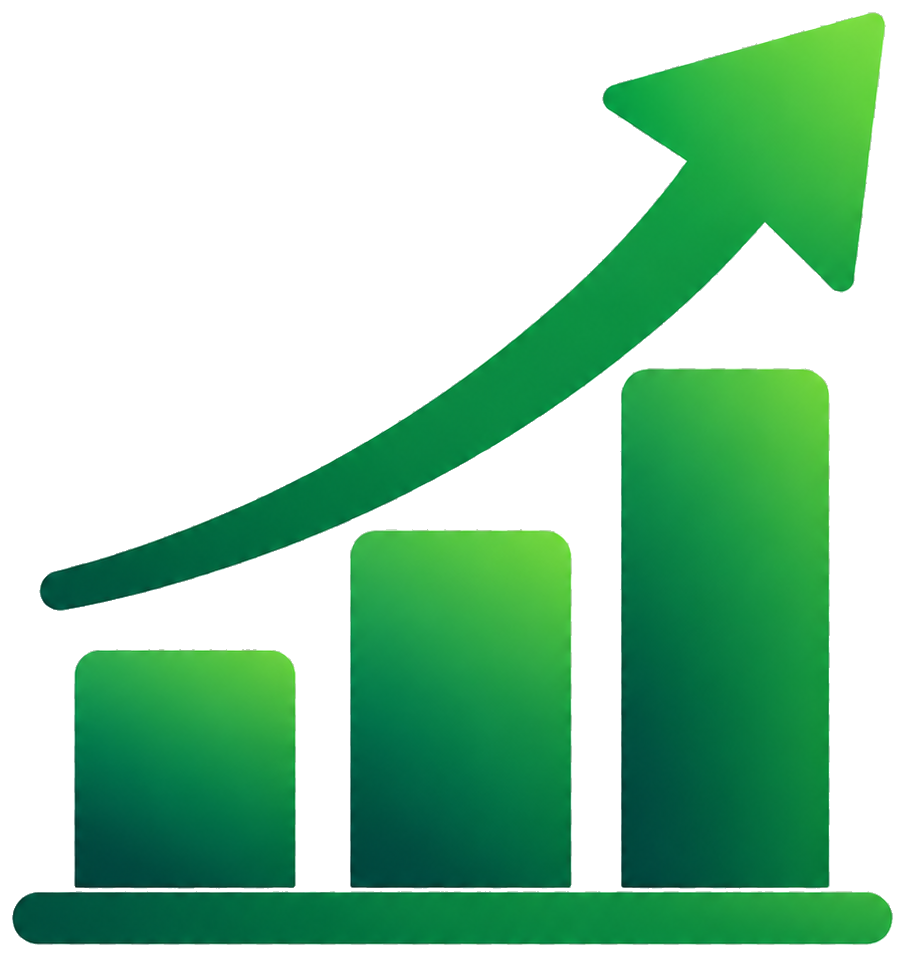
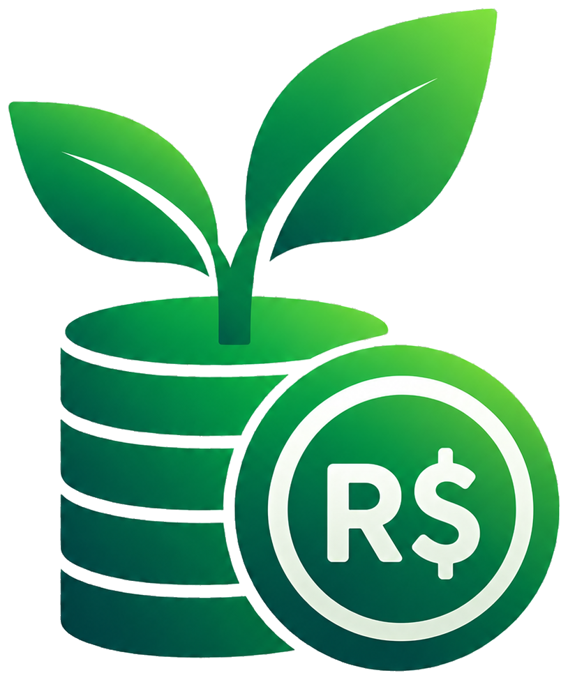
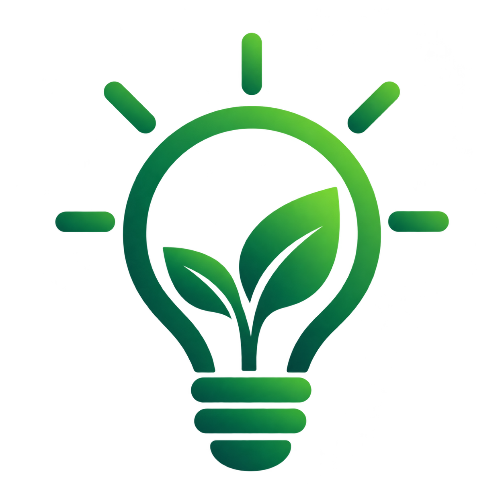
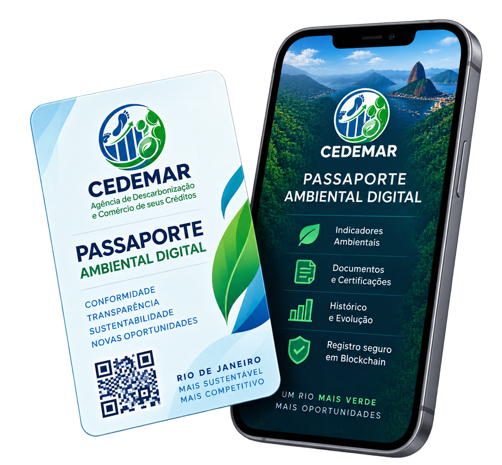

01
Adesão
A empresa realiza o cadastro e manifesta interesse.
→RIO DE JANEIRO MAIS SUSTENTÁVEL
Uma iniciativa da CEDEMAR, vinculada ao Governo do Estado do Rio de Janeiro, que conecta empresas a novas oportunidades, impulsiona uma economia verde e contribui para um futuro de baixo carbono.



COMO FUNCIONA
A empresa realiza o cadastro e manifesta interesse.
→Levantamento de informações ambientais e indicadores.
→Verificação independente das evidências.
→Emissão do Selo Verde RJ e registro.
→Acompanhamento contínuo da evolução.
→PASSAPORTE AMBIENTAL DIGITAL
O Passaporte Ambiental Digital reúne os indicadores, documentos e histórico da sua empresa, com registro seguro em blockchain.

ATIVOS AMBIENTAIS
Estruture registros verificáveis para certificações e ativos ambientais, conectando dados, evidências, mercado e oportunidades de financiamento.
Hash • Data • Emissor • Ativo
CEDEMAR • SELO VERDE RJ
O Selo Verde RJ reconhece, valoriza e impulsiona empresas comprometidas com a sustentabilidade, conectando-as a novos mercados, investimentos e oportunidades no Estado do Rio de Janeiro.
Recursos naturais hoje para as próximas gerações.
Explorar →Uma economia inovadora, verde e inclusiva.
Explorar →Empresas, sociedade e novas oportunidades.
Explorar →DADOS PARA DECISÃO
CEDEMAR • GOVERNO DO ESTADO DO RIO DE JANEIRO